Description:
The moral of this story was based upon two fish waiting to be sold at a fish shop. A man comes in and decides he wants the yellow fish But the yellow one hid from the manager so he couldn't be picked.
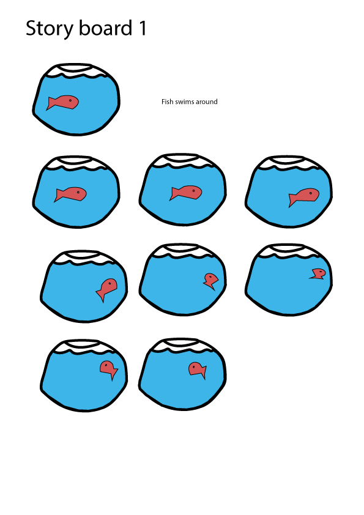 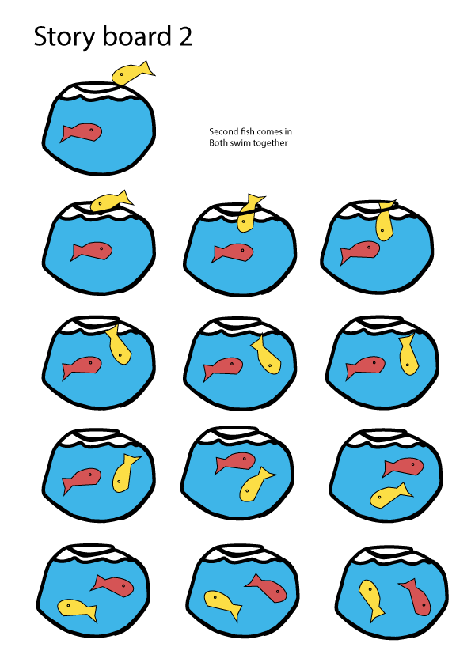 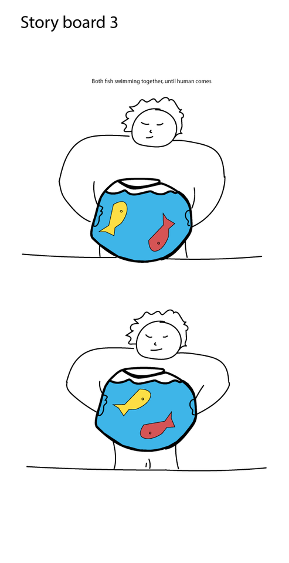 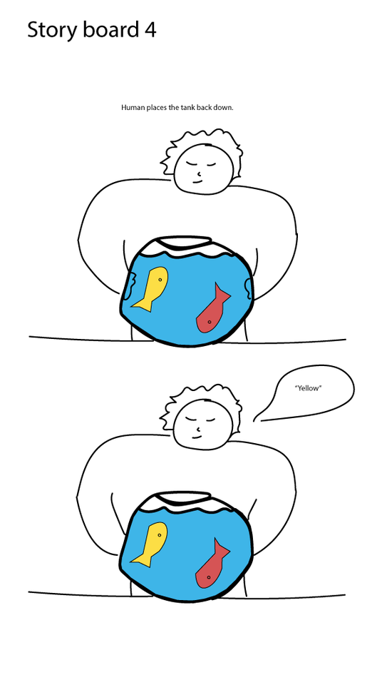 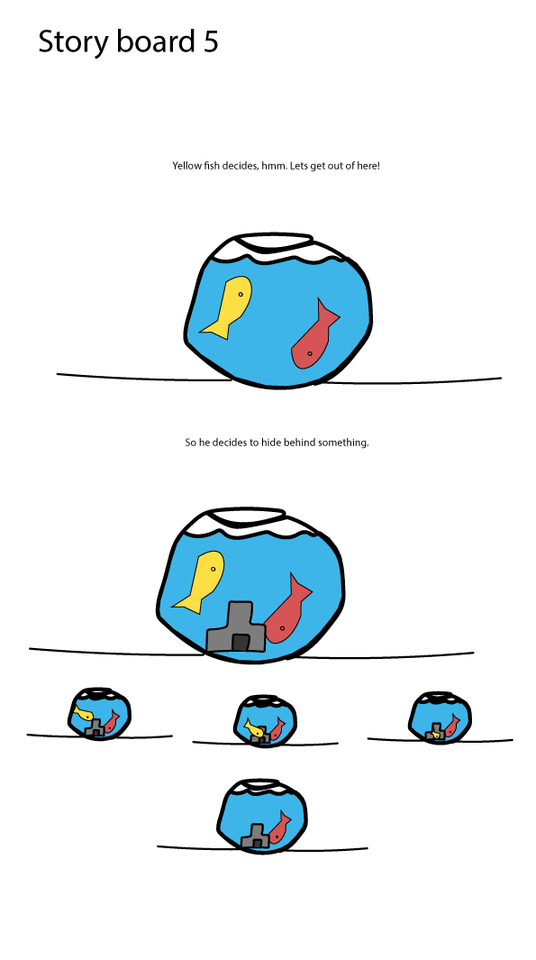 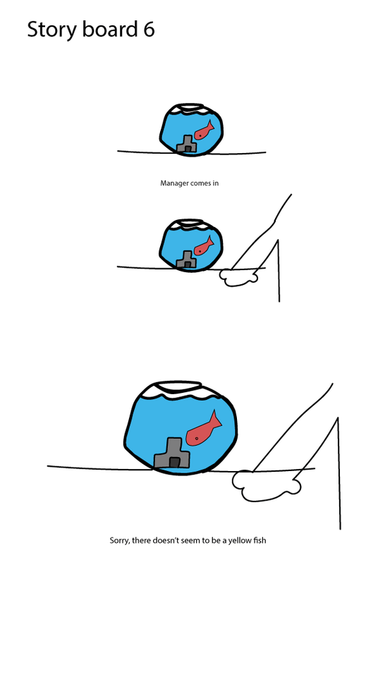 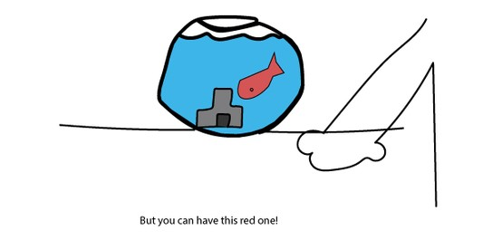Description:
In this story, the two fish have two different stories on how they got to the fish shop And both of the fish end up bonding over the situation.
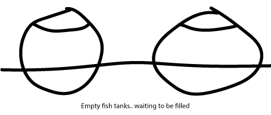 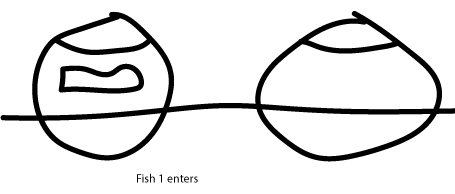 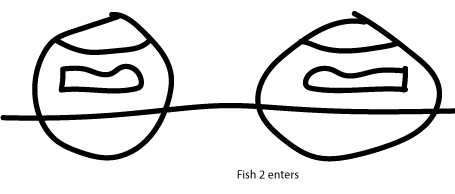 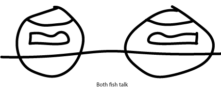 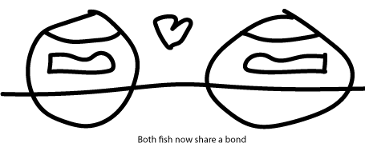Description:
As you can see I decided to use the second storyboard. Fish one enters fish bowl. Fish one swims around trying to get comfortable. Noises come from right of the screen. Red fish enters. Red fish swims around. Fish one questions red fish's arrival. Red fish explains where he came from. Fish one explains where he came from. Both fish make a moment of friendship. END SCENE.
I decided not to include narrative in the form of text because I tried to illustrate the fish's emotions by use of their body language and thought bubbles, and thought that it should be enough to convey (in terms of fish emotions) what it would be like to be an actual fish (if their memorys were longer than 3), and could remember vocabulary, bondship etc. The only thing that would be appropriate in terms of adding anything other than animations, would be to add the sound of a splash occuring during the fish as they enter the fish bowl. This would increase the illusion of the animation tremendously.
I had no real inspiration. Just a thought of using a fish as the subject occured when thinking about what my star sign is. (pisces). This related to me so, I decided to make a fish animation based on who I am astrologically. This provides to the viewer, more perspective of why fish were chosen as the subject. The intended audience is aimed directly to people in to short-films or short 30 second stories. User experience wise, I was trying to make sure things were quite spaced out, and that the fish's bodies portrayed human emotions accurately.
Width: 500
Height: 400
Units: px
File format: .mp4
File size: 2.92MB
File -> Export -> Export Video -> Export -> Start Queue
I exported it this way because it compressed all frames in to a single .mp4 file
I decided to use the animating software: Adobe Animate. Because it worked for what I needed in an animation program. It had features that moved objects around the screen using frame by frame automation. Which is perfect for animations. I didn't know my way around, so I searched online for tutorials. Although, during my experience I have found that this key-to-key animation method wasn't my main focus for animating my work and actually preferred to use tweens to move my shapes. Which is considerably alot smoother than manually drawing frame-to-frame animations. It also worked very well, because tweens animated the fish whenever it changed direction. And this gave an amazing effect which gave me the idea to use it again in the last love heart effect - demonstrated by how the love heart changes colour in gradient-like fashion.
Managed assets using a github repository.